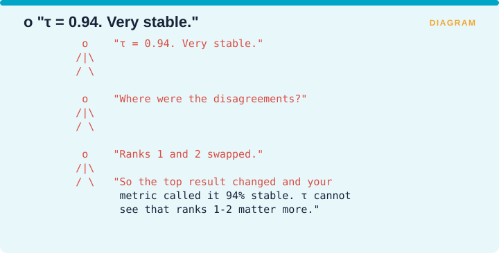
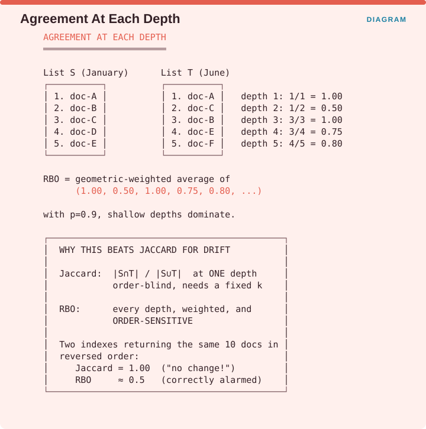
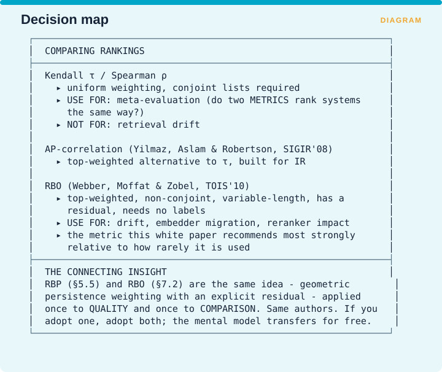

Measuring Retrieval › Chapter 7 - Comparing Two Rankings
Chapter 7 - Comparing Two Rankings
7.0 A different question
Chapters 4 through 6 all asked whether a ranking was good, and answering that question required somebody to have judged which documents were relevant. This chapter asks a different question entirely: are these two rankings the same? Answering that needs no relevance judgments at all, because you are comparing two lists against each other rather than against the truth.

The figure names the pivot. Asking whether a ranking is good needs labels, and that is what nDCG, MAP and RBP do, which makes them quality metrics. Asking whether a ranking is the same needs no labels, and that is what Kendall’s τ and RBO do, which makes them drift metrics.
That property is why this chapter is the bridge into drift measurement. You cannot ask whether your retrieval is still good without labels somebody has to pay for. You can ask whether your retrieval is still doing what it did in January using nothing but two result lists you already have.
7.1 Kendall’s τ and Spearman’s ρ
One-line: Classical rank-correlation coefficients measuring how similarly two rankings order the same items.
Formula (Kendall’s τ):

Facets: Integrity/Drift | query | free | R | ESTABLISHED VERIFIED (standard statistics)
The problem it solves
Before anything specific to retrieval, there is a general statistical question: given two orderings of the same things, how similar are they? Kendall’s τ and Spearman’s ρ are the standard answers, they have been standard for most of a century, and they are implemented everywhere.
The idea
Take every possible pair of items and ask whether the two rankings agree about which one comes first. A pair the two rankings order the same way is concordant, and a pair they order differently is discordant. Kendall’s τ is the number of concordant pairs minus the number of discordant pairs, divided by the total number of pairs, so it reads as the extent to which the two lists agree about pairwise ordering. A τ of 1 means identical ordering, 0 means the two rankings are independent of each other, and -1 means one is the exact reverse of the other.
Advantages
- Simple, well understood and universally implemented, so there is no argument about whether your implementation is right.
- No labels required.
- Interpretable as a probability that the two rankings agree about any randomly chosen pair.
- Standard for meta-evaluation, meaning the comparison of how two different metrics rank the same set of systems. This is how eRAG’s headline result is stated, as τ improvements of between 0.168 and 0.494.
Disadvantages
- Uniform weighting across ranks, which is the fatal problem for retrieval. A swap between positions 1 and 2 counts exactly as much as a swap between positions 999 and 1000.
- Requires conjoint lists, meaning both rankings have to cover the same set of items. Two retrievers running over the same collection that return different top-10s do not satisfy this.
- Undefined behaviour on truncated lists, which is the only kind of list you actually have.

The figure shows how the uniform weighting misleads. A team reports τ of 0.94 and calls the system very stable. Asked where the disagreements were, they answer that ranks 1 and 2 swapped. The top result changed, which is the single change users are most likely to notice, and the metric called the system 94% stable, because τ has no way of knowing that ranks 1 and 2 matter more than any other pair.
Recommendation
Use τ for meta-evaluation, where you are comparing how two metrics rank a set of systems and uniform weighting is appropriate because every system in the comparison matters equally. Do not use it for retrieval drift, where the top of the list dominates what anyone experiences. Use RBO for that.
There is a specialized alternative worth knowing about. Yilmaz, Aslam and Robertson’s AP-correlation (SIGIR 2008, pp. 587-594 VERIFIED) is a top-weighted rank correlation built for information retrieval precisely because τ is not.
7.2 RBO - Rank-Biased Overlap
One-line: A top-weighted similarity measure for ranked lists that may be of different lengths and may not share the same items.
Formula:

Facets: Integrity/Drift | query | free | R | ESTABLISHED VERIFIED Source: Webber, Moffat & Zobel, A Similarity Measure for Indefinite Rankings, ACM TOIS 28(4):20:1-20:38, 2010
The problem it solves
Two real retrieval result lists break every assumption Kendall’s τ makes. They are top-weighted, because nobody cares about position 400. They are usually different lengths. And they routinely contain different documents, so there is no shared item set to build pairs from. A metric for comparing retrieval results has to handle all three, and τ handles none of them.
The idea
RBO was built for what its authors call indefinite rankings, meaning lists that are top-weighted, possibly of different lengths, and non-conjoint, which is the technical way of saying they need not contain the same items. That is an exact description of two retrieval result lists.
Reading the formula, S and T are the two lists, S_{1:d} means the top d items of list S, and the intersection of the two top-d sets divided by d is the agreement at depth d. The parameter p is persistence again, exactly as in RBP, where a larger p puts more weight on deeper ranks. So mechanically you compute the overlap at each depth, divide by the depth to turn it into an agreement fraction, and take a geometrically weighted average of those agreements across all depths.
The family resemblance to RBP in §5.5 is not a coincidence, since these are the same authors using the same persistence parameter and the same geometric weighting. RBO is RBP’s idea applied to comparison instead of to quality.

The figure works an example. List S from January holds doc-A, doc-B, doc-C, doc-D and doc-E in that order, and list T from June holds doc-A, doc-C, doc-B, doc-E and doc-F. At depth 1 both lists contain doc-A, so agreement is 1/1 = 1.00. At depth 2 the lists hold {A, B} and {A, C}, which share only doc-A, so agreement is 1/2 = 0.50. At depth 3 both contain A, B and C in some order, so agreement returns to 3/3 = 1.00. At depth 4 they share three of four items, giving 0.75, and at depth 5 they share four of five, giving 0.80. RBO is the geometrically weighted average of that sequence, and with p set to 0.9 the shallow depths dominate the result.
The figure also explains why this beats the obvious alternative. Jaccard similarity computes the size of the intersection divided by the size of the union at one fixed depth, which makes it blind to order and dependent on a cutoff you have to choose. RBO looks at every depth, weights them, and is sensitive to order. Consider two indexes returning the same ten documents in exactly reversed order: Jaccard reports 1.00 and declares no change, while RBO reports roughly 0.5 and correctly raises the alarm.
Advantages
- Top-weighted, so it respects the fact that rank 1 matters more than rank 50.
- Handles non-conjoint lists, so the two lists need not contain the same documents, which is essential when comparing two retrievers or two versions of an index.
- Handles different lengths, including the case of comparing a short ideal list against a long actual one.
- No labels required, since it is pure comparison.
- Has a residual, in the same way RBP does, so it can report bounds when the lists are truncated.
- Tunable persistence through p, which lets you match the depth your consumer actually reads.
- Widely adopted outside information retrieval, in search-engine comparison, machine learning and network analysis, so implementations are easy to find.
Disadvantages
- p must be chosen and reported, which is the same discipline RBP requires.
- Comparative only. RBO tells you that two rankings differ and never which of them is better, so a consistently terrible retriever scores a perfect 1.0 against itself.
- The infinite sum has to be truncated in practice, which brings an extrapolation assumption with it.
- Less familiar than Jaccard, so you will spend time explaining it.
Domain examples
Index drift monitoring. The headline use and the recommendation Supplement A made. Freeze 500 queries along with their top-k results, recompute monthly, and report RBO against the baseline. A falling RBO with no deployment to explain it means your corpus moved underneath you.
Embedder migration. CAUTION Read the correction in the Supplement A Addendum before you act on this one. Caspari et al. found that at the small values of k that RAG actually uses, different embedders retrieve almost completely distinct chunks on larger datasets. So a low RBO between two different models is the normal state rather than an alarm. The comparison that carries information is the same model over time, where RBO should sit near 1.0 unless something genuinely changed.
A/B comparison of rerankers. RBO between the list before reranking and the list after it quantifies how much work the reranker is actually doing, and a value near 1.0 means you deployed something that does nothing.
Recommendation
RBO is the single most useful metric in this chapter for RAG practitioners, and it is almost never used in the field.

The protocol in the figure is five steps. Freeze 500 representative queries. Record the top-k for each of them today, with the embedder version and the value of k stamped on the record. Every month, recompute and report RBO against that baseline, with p matched to your k. Alert on a sustained decline rather than on a single dip. Re-baseline deliberately after any intentional change, and keep the old baseline rather than discarding it.
Setting this up costs about an afternoon and running it costs minutes per month, which makes it the cheapest real drift metric available to you.
Failure mode

A team reports RBO against baseline of 1.00 in January, 1.00 in March and 1.00 in June, and concludes the system is rock solid with no drift at all. Asked whether the corpus is still being updated, they discover the ingestion job failed in February.
Perfect stability can mean the system is healthy or it can mean nothing is happening, and RBO cannot tell those apart. Pair it with a check that the corpus is still receiving fresh content.
7.3 Chapter 7 summary

Kendall’s τ and Spearman’s ρ use uniform weighting and require conjoint lists, which makes them right for meta-evaluation, meaning the question of whether two metrics rank systems the same way, and wrong for retrieval drift. AP-correlation from Yilmaz, Aslam and Robertson is the top-weighted alternative to τ, built specifically for information retrieval. RBO is top-weighted, works on non-conjoint lists of different lengths, carries a residual and needs no labels, which makes it the right tool for drift, embedder migration and measuring reranker impact, and it is the metric this book recommends most strongly relative to how rarely anyone uses it.
There is a connection worth carrying forward. RBP from §5.5 and RBO from §7.2 are the same underlying idea, namely geometric persistence weighting with an explicit residual, applied once to quality and once to comparison, by the same authors. If you adopt one of them, adopt both, because the mental model transfers across for free.
Measuring Retrieval · Madhava Gaikwad · First edition, September 2026